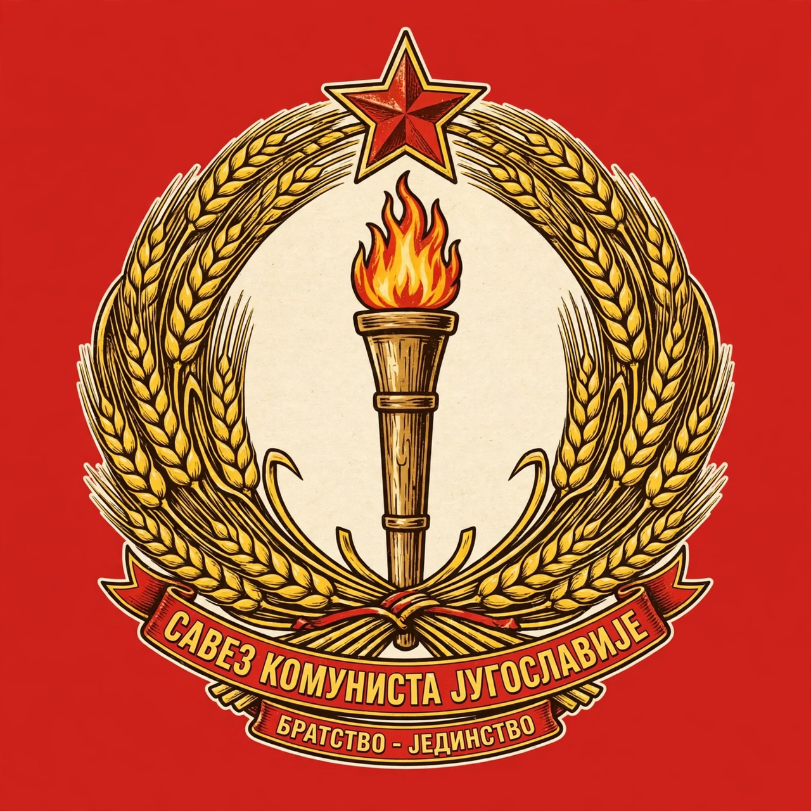

League of Communists of Yugoslavia
| League of Communists of Yugoslavia | |
|---|---|
 | |
| Founded | 20 April 1919 (as Communist Party of Yugoslavia) |
| Dissolved | 22 January 1991 |
| Headquarters | Belgrade, SR Serbia |
| Ideology | Communism; Titoism; Marxism–Leninism; Yugoslavism |
| Leader | Josip Broz Tito (1939–1980) |
The League of Communists of Yugoslavia, known until 1952 as the Communist Party of Yugoslavia, was the ruling party of the Socialist Federal Republic of Yugoslavia. Founded in 1919, it won power through the Partisan resistance in World War II under Josip Broz Tito and governed Yugoslavia as a one-party state until its collapse in 1990–91.
History
The party was founded at a unification congress in Belgrade in April 1919 and initially won striking electoral success before being banned in 1921 and driven underground. Tito became its leader in the late 1930s, purging and rebuilding the organisation. During the Axis occupation of 1941–45, the party led the National Liberation Army (the Partisans), the largest resistance movement in occupied Europe, and emerged from the war as the master of the country.
In power
After 1945 the party built a federal socialist state. The 1948 rupture with Stalin's Soviet Union led to the distinctly Yugoslav doctrine of workers' self-management and non-alignment, sometimes called "Titoism". At its Sixth Congress in 1952 the party renamed itself the League of Communists, signalling a nominal shift from direct command toward ideological guidance. Membership peaked at over two million in the early 1980s.
Decline and dissolution
After Tito's death in 1980 the party's authority was exercised through a rotating collective presidency and increasingly through its republican branches, which by the late 1980s were captured by nationalist leaderships. At the 14th Congress in January 1990 the Slovene and Croatian delegations walked out; the League effectively disintegrated and was dissolved in January 1991, with its republican organisations re-founding themselves as separate, mostly social-democratic or nationalist, parties.